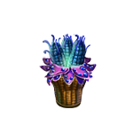

Получено: файл; исходный URL. Оригинальные байты, полученные по ссылке; идентичность архиву не подтверждена.
Сонный качан
Браузерная социальная версия; историческая статья; дата редакции неизвестна- Тип
- Рецепты
- Версия и дата
- Браузерная социальная версия; историческая статья; дата редакции неизвестна
Данные по источнику · Браузерная социальная версия · историческая статья; дата редакции неизвестна
Предварительно: один источник; требует сверки. Требуется сверка.
- Время варки (ЗомбиСити)
- 45 мин.
- Стоимость ингредиентов (ЗомбиСити)
- 1692 монет
- Цена продажи (ЗомбиСити)
- 3165 монет
- Прибыль (по источнику)
- 1473 монет
- Ингредиенты (ЗомбиСити)
- 5 Кукуруза + 3 Сонтрава


Данные по источнику · браузерная версия; платформа не указана · дата редакции не установлена
Предварительно: Данные исторической таблицы; количество и название прочитаны по значкам и их подписям. Возможны изменения игры и отличия версий.. Требуется сверка.
- Ингредиенты (подписи пиктограмм источника)
- 3 × Урожай сон-травы + 5 × Урожай кукурузы
- Время варки
- 45 минут
- Продажа
- 3165 монет
- Чистая прибыль по определению сайта
- 1473 монет; продажа продукта минус продажа ингредиентов
- Применение (подписи пиктограмм)
- Гипносон
Связанные сущности
нет проверенных связей — требуется сверка.